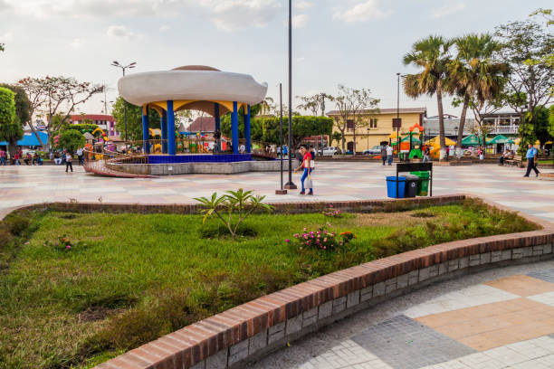
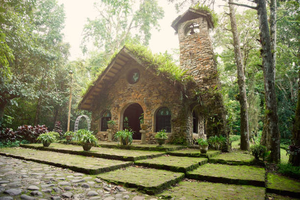
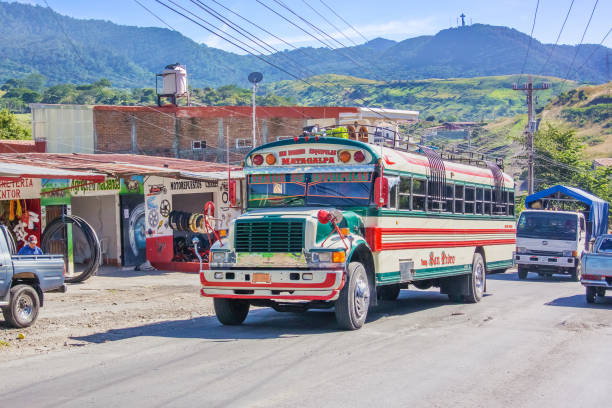
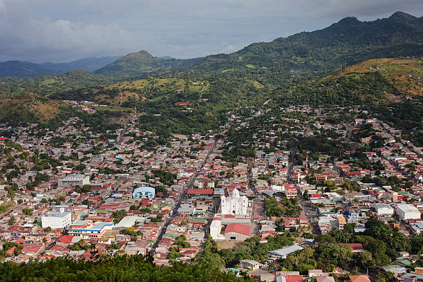
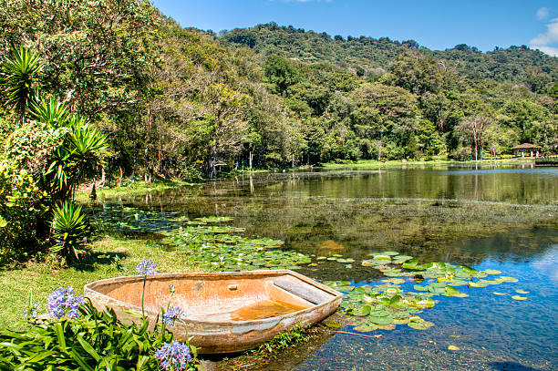
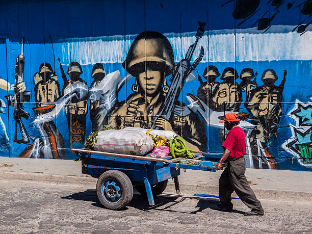

Acerca de la Región Central
La Región Central de Nicaragua es conocida por su clima fresco, paisajes montañosos y biodiversidad. Compuesta por departamentos como Matagalpa, Jinotega, Estelí, y Boaco, esta región destaca por la producción de café, tabaco y ganadería. Sus reservas naturales y bosques nubosos atraen a ecoturistas, mientras que las tradiciones culturales enriquecen la identidad nicaragüense.
Aquí encontrarás una mezcla de actividades agrícolas, bellezas naturales y tradiciones vivas, que hacen de la Región Central un destino fascinante para explorar.





